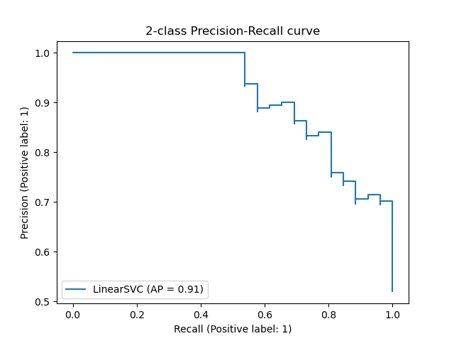

8 Classification
9 Evaluation of Classifiers
9.1 Confusion matrix
This gives a quick overview on the distribution of true positives (TP), false positives (FP) , TN true negatives, FN false negatives.
| predicted positive | predicted negative | |
| actual positive | TP | FN |
| actual negative | FP | TN |
from sklearn.metrics import confusion_matrix
import seaborn as sns
confusion = confusion_matrix(y_true=y_test, y_pred=y_pred, labels=categories_list)
sns.heatmap(confusion, annot=True, xticklabels=categories_list, yticklabels=categories_list, fmt='.0f')9.2 Basic Quality Measures
\text{Accuracy / Success Rate} = \frac{ \text{correct predictions}}{\text{total predictions}} = \frac{ \text{TP}+\text{TN}}{\text{TP} + \text{TN}+\text{FP}+\text{FN}}
This metric should only be used in this pure form, when the number of positive and negative samples are balanced.\text{Precision} = \frac{\text{TP}}{\text{TP}+\text{FP}}
i.e. How many of your positive predictions are actually positive?\text{True positive rate / Recall / Sensitivity} = \frac{\text{TP}}{\text{TP}+\text{FN}}
i.e. How many of the positive samples did you catch?\text{True negative rate / Specificity / Selectivity} = \frac{\text{TN}}{\text{TN}+\text{FP}}
i.e. How many of the negative samples did you catch as negative (i.e. are truly negative)?\text{F-score} = 2 \frac{\text{precision} * \text{recall}}{\text{precision}+\text{recall}}
This is useful in cases of unbalanced classes to balance the trade-off between precision and recall.
from sklearn.metrics import classification_report
classification_report(y_true, y_pred)more info: scikit-learn.org
9.3 Area under the Curve
This class of measures represents the quality of the classifier for different threshold values \theta by calculating the area under the curve spanned by different quality measures.
Area under the Receiver Operating Characteristics Curve (AUROC or AUC)
The AUC can be interpreted as follows: When the classifier gets a positive and a negative point, the AUC shows the probability that the classifier will give a higher score to the positive point. A perfect classifier has an AUC of 1, and AUC of 0.5 represents random guessing.
from sklearn.metrics import roc_auc_score
roc_auc_score(y, clf.decision_function(X)) # instead of dec. func. you can use clf.predict_proba(X)More info: scikit-learn.org
! This measure is not sensitive to class imbalance!

{kind=link}
Area under the Precision-Recall Curve (AUPRC) / Average Precision (AveP)
This measure can be used for unbalanced data sets. It represents the average precision as a function of the recall. The value of 1 represents a perfect classifier.
from sklearn.metrics import average_precision_score
average_precision_score(y_true, y_pred)More info: scikit-learn.org

9.4 Handling Unbalanced Data
Having many more samples in one class than the others during training can lead to high accuracy values event though the classifier performs poorly on the smaller classes. You can handle the unbalance by:
up-sampling the smaller data set (creating more artificial samples for that class)
giving more weight to the samples in the smaller data set
using a quality measure that is sensitive to class imbalance
Oversampling using imbalanced-learn (see: )
from imblearn.over_sampling import RandomOverSampler
ros = RandomOverSampler(random_state=0)
features_resampled, labels_resampled = ros.fit_resample(df[feature_cols], df[label_col])Unbalance-sensitive quality measures: Sensitivity, specificity, precision, recall, support and F-score
y_true = df[label_col]
y_pred = classifier.predict(df[feature_cols])
from imblearn.metrics import sensitivity_specificity_support
sensitivity, specificity, support = sensitivity_specificity_support(y_true, y_pred)
from sklearn.metrics import precision_recall_fscore_support
precision, recall, fscore, support = precision_recall_fscore_support(y_true, y_pred) 9.5 Nearest Neighbors Classifier
This classifier predicts the class label using the most common class label of its k nearest neighbors in the training data set.
Pros:
- Classifier does not take time for training.
- Can learn complex decision boundaries.
Cons:
- The prediction is time consuming and scales with n.
from sklearn.neighbors import KNeighborsClassifier
kn_model = KNeighborsClassifier(n_neighbors=5)
kn_model.fit(X, y)
kn_model.predict([[5,1]])10 Naive Bayes Classifier
Naive Bayes classifies works on the assumption that the features are conditionally independent given the class label. For every point a simplified version of Bayes rule is used:
P(Y=y_i|X=x) \propto P(X=x|Y=y_i) * P(Y=y_i) where Y is the RV for the class label and X is the RV that contains the feature values. This holds since P(X=x) is the same for all classes. Since the different features X_j are assumed to be independent they can be multiplied out. The label y_i with the highest probability is the predicted class label: \arg \max_{y_i} P(Y=y_i|X=x) \propto P(Y=y_i) \prod_{j=1}^{d} P(X_j=x_j|Y=y_i) One usually estimates the value of P(Y) as the ferquency of the different classes in the training data or assumes that all classes are equally likely.
To estimate the P(X_j=x_j|Y=y_i) the following distributions are commonly used:
For binary features: Bernoulli distribution
For discrete features: Multinomial distribution
For continuous features: Normal / Gaussian distribution
For discrete features, you need to use a smoothing prior (add 1 to every feature count) to avoid 0 probabilities for samples with features being 0 in the training data.
Pros:
Naive Bayes training is fast.
Combine descrete and continuous features since a different distribution can be used for each feature.
You can have straight decision boundaries (when classes have same variance), circular decision boundaries (different variance, same mean) and parabolic decision boundaries (different mean, different variance).
Cons:
The probability estimates from Naive Bayes are usually bad.
The independence assumption between the features is usually not given in real life.
from sklearn.model_selection import train_test_split
from sklearn.naive_bayes import GaussianNB
clf = GaussianNB()
clf.fit(X, y)More info: scikit-learn.org
11 Linear discriminant analysis (LDA)
Contrary to Naive Bayes, the features in LDA are not assumed to be independently distributed. As with Bayes rule a distribution for each class is calculated according to Bayes rule. P(X=x|Y=y_i) is modeled as a multivariate Gaussian distribution. The Gaussians for each class are assumed to be the same. The log-posterior can be simplified to:
log(P(y=y_i|x) = - \frac{1}{2} (x-\mu_i)^t \Sigma^{-1}(x-\mu_i)+\log P(y=y_i) \mu_i is the mean of class i, (x-\mu_i)^t \Sigma^{-1}(x-\mu_i) corresponds to the Mahalanobis distance. Thus, we assign the point to the class whose distribution it is closest to.
LDA can also be thought of projecting the data into a space with k-1 dimensions (k being number of classes). More info: wikipedia.org. It can also be used as a dimensionality reduction method.
from sklearn.discriminant_analysis import LinearDiscriminantAnalysis
clf = LinearDiscriminantAnalysis()
clf.fit(X, y)More info: scikit-learn.org
12 Support Vector Classifier (SVC)
SVCs use hyperplanes to separate data points according to their class label with a maximum margin (M) between the separating hyperplane (x^T\beta + \beta_0=0) and the points. If points cannot be perfectly separated by the decision boundary, a soft margin SVM is used with a slack variable \xi that punishes points in the margin or on the wrong side of the hyperplane. The optimization problem is given by:
\begin{split} \max_{\beta, \beta_0, \beta=1} M, \\ \text{subject to } y_i(x_i^T \beta + \beta_0) \ge 1 - \xi_i, \quad \forall i, \\\xi_i \ge 0, \quad \sum \xi_i \le constant, \quad i= 1, ..., N, \end{split}
where \beta are the coefficients and x are the N data points. The support vectors are the points that determine the orientation of the hyperplane (i.e. the closest points). The classification function is given by:
G(x) = \text{sign}[x^T\beta + \beta_0]
If you only calculate the inner part of the function you can get the distance of a point to your hyperplane (in SKlearn you need to divide by the norm vector w of your hyperplane to get the true distance). To get the probability of a point being in a class, you can use Platt’s algorithm. SVMs are sensitive to the scaling of the features. Therefore, the data should be normalized before classification.
from sklearn import svm
# train the model
svc_model = svm.SVC()
svc_model.fit(train_df[feautre_cols], train_df[label_col])
# test the model
y_predict = svc_model.predict(test_df[feature_cols])13 Decision Trees
A decision tree uses binary rules to recursively split the data into regions that contain only a single class.

{kind=link}
Pros:
Interpretable results, if trees are not too big.
Cheap to train and predict.
Can handle categorical and continuous data at the same time.
Can be used for multi-output problems (e.g. color and shape of object).
Cons:
- Overfitting risks
- Some concepts are hard to learn (X-OR relationships, Decision boundaries are not smooth)
- Unstable predictions: Small changes in data can lead to vastly different decision trees.
Tips:
Doing PCA helps the tree find separating features.
Visualize the produced tree.
Setting a lower boundary on the split-sizes of the data, reduces the chance of overfitting.
Balance the dataset or weight the samples according to class sizes to avoid constructing biased trees.
from sklearn.tree import DecisionTreeClassifier
clf = DecisionTreeClassifier(max_depth=10, min_samples_split=0.01, class_weight="balanced")
clf = clf.fit(X, Y)More info: scikit-learn.org
13.1 Random forests
Random forests are a version of a bagging classifier employing decision trees. To reduce the variance, the separate trees can be assigned a limited number of features as well.
from sklearn.ensemble import RandomForestClassifier
clf = RandomForestClassifier(max_depth=10, max_features="sqrt", class_weight="balanced")
clf.fit(X, y)More info: scikit-learn.org
13.2 Gradient boosted decision trees (GBDTs)
Gradient boosted decision tree models are a form of boosting employing decision trees.
import lightgbm as lgbm
clf = lgbm.LGBMClassifier(class_weight= "balanced")
clf.fit(X, y)More info: lightgbm documentation, Parameter tuning,
Further Parameter tuning
Similar model: scikit-learn.org